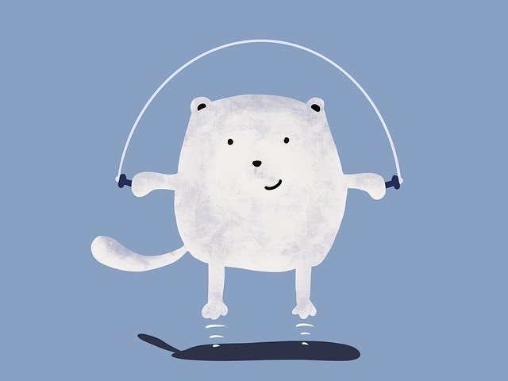
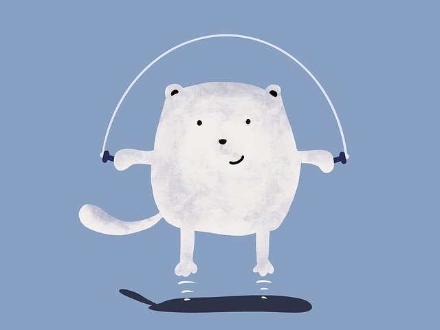

Andrzej Kocon - dziennik najlepszego programisty JavaScript w Sokółce
Uwaga będzie to tutaj moim pamiętnikiem. I zostanę tym programistą, zobaczycie. BOXXPLAY TO KUPA
Uwaga będzie to tutaj moim pamiętnikiem. I zostanę tym programistą, zobaczycie. BOXXPLAY TO KUPA
